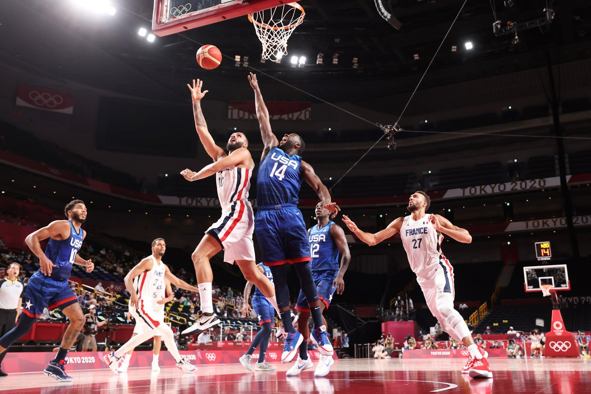
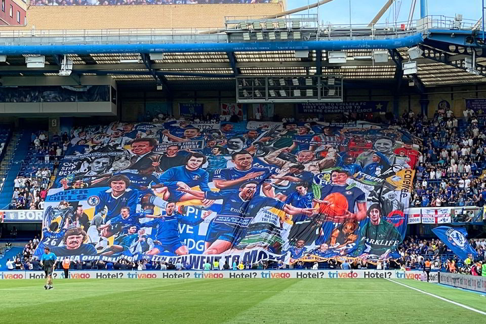

<!--#set var="title" value="Главная страница" -->
<!--#include virtual="/parts/head.html" -->
<!--#include virtual="/parts/navbar.html" -->
<div class="content articles col-md-12">
    <div class="container">
        <div class="row">
            <main class="articles col-md-9">
                <div class="container">
                    <div class="row">
                        <h1 class="content__title">football</h1>
                        <article>
                            <div class="content__text">
                                <h2>Aston Villa have announced the signing of Boubacar Kamara on a free transfer
                                    following
                                    the end
                                    of
                                    his deal at Marseille.
                                </h2>
                                
                                <p>Aston Villa have announced the signing of Boubacar Kamara on a free transfer
                                    following
                                    the end of
                                    his
                                    deal at Marseille.</p>
                                <p>The highly-ratted 22-year-old French midfielder has penned five-year terms with
                                    Steven
                                    Gerrard's
                                    side.
                                </p>
                                <p>Gerrard told the club's website: “I am delighted that we have been able to attract
                                    one of
                                    the
                                    most
                                    promising young talents in European football.</p>
                                <p>“We have a very clear plan to make our team stronger and Bouba is an important part
                                    of
                                    that.”</p>
                                <p>Boubacar said: “When I met with Steven, Christian a nd Johan in my home I knew Aston
                                    Villa was
                                    for
                                    me.
                                    Their ambition and determination to succeed matches my own.</p>
                                <p>“I cannot wait for pre-season to get going.”</p>
                                <div class="text__blur"></div>
                            </div>
                        </article>
                        <hr>
                        <article>
                            <div class="content__text">
                                <h2>ART Chelsea fans unveil massive tifo of club legends and iconic moments which
                                    stretches
                                    from top
                                    to
                                    bottom of Shed End at Stamford Bridge</h2>
                                
                                <p>Chelsea fans unfurled a huge tifo banner in the Shed End at Stamford Bridge ahead of
                                    their final
                                    game
                                    of the season against Watford on Sunday.</p>

                                <p>The gigantic artwork put together by fan group We Are The Shed (illustrated by Phil
                                    Galloway)
                                    depicts
                                    several club legends and iconic moments, while also paying tribute to members of the
                                    current
                                    team.
                                </p>
                                <div class="text__blur"></div>
                            </div>
                        </article>
                    </div>
                    <!-- /.container -->
            </main>
            <!-- /.content -->
            <aside class="flex-shrink-0 p-3 bg-white col-md-3">
                <a href="/" class="d-flex align-items-center pb-3 mb-3 link-dark text-decoration-none border-bottom">
                    <svg class="bi pe-none me-2" width="30" height="24">
                        <use xlink:href="#bootstrap"></use>
                    </svg>
                    <span class="fs-5 fw-semibold">Реклама</span>
                </a>
                <div class="advert1">
                    <span class="close__advert">X</span>
                    <a class="" href="/">
                        </a>
                </div>
                <div class="advert2">
                    <span class="close__advert">X</span>
                    <a class="" href="/english.html">
                        </a>
                </div>
            </aside>
            <!-- ./ col-md-3 -->
        </div>
    </div>
</div>
<!--#include virtual="/parts/footer.html" -->